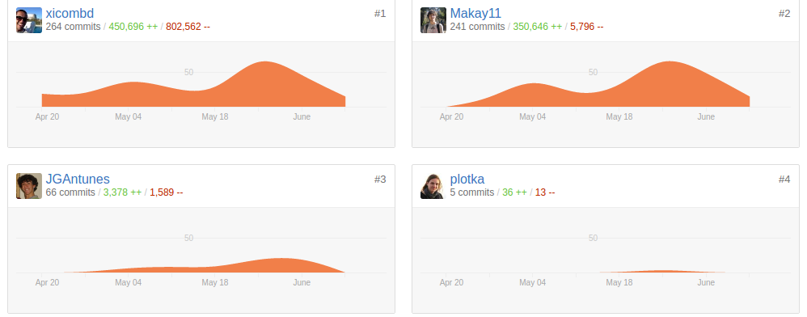
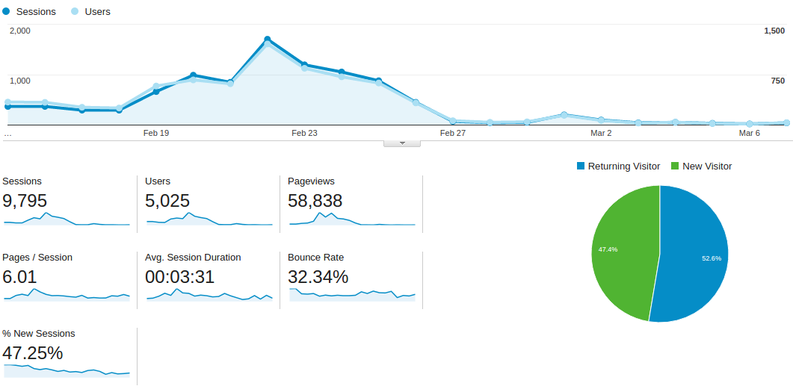

What do you know about SINFO?
Organizing a conference, tech style!
Who am I?
@jgantunes on twitter and github
Coordinator @ SINFO
Software Engineer @ YLD
Just a quick show of hands...
Who knows SINFO?
Who has been to an edition of SINFO?
How many members? ... partipants? ... speakers? ... companies?
SINFO
SINFO is a non-profit, college student, organization responsible for organizing one of the biggest Tech conferences in Portugal. It's an annual, non-profit event whose goal is to create a suitable, tech friendly environment to learn, share and explore through keynotes, workshops, presentations and much, much more!
The problem
A good way to register information about speakers and companies.
Allow members to build a discussion around them.
A clear way to show communication status and allow peer review.
Some tasks could be improved and automated: sessions register, surveys, etc.
What we had...
A private forum.
A legacy "wiki".
Google drive docs.
Paper... A lot of paper...
We needed better...

Francisco (@xicombd) was litereally pissed of with the amount of time members lost in this processes.
First he started by building a scrapper to extract all the info we had on the private forum and store it in a MongoDB database.
We started by building a simple web app
A RESTful API built with NodeJS using HapiJS framework.
MongoDB database.
Angular 1.x on the client side.
And then filled the hell out of it with features!
When we eventually stopped to think...
The whole thing was tearing apart.
We built this whole monster in 4 months, but it was really hard to maintain it and improve it.
What we ended up doing
Refactor key parts of the code.
Cut down heavily on features which weren't that important.
Faced with the possibility, we ended up changing from Angular to AmpersandJS.
Automated tests.
Finally we had
EventDeckThe rest of the problem
Tasks like session tickets and surveys needed to be handled.
Take this chance to create a more engaging experience for the attendees.
But there was room for more. Why not use EventDeck info?
The Cannon API
A RESTful API to manage attendees allowing them to register in sessions, answer to our surveys, win prizes through achievements and upload their CV's
Built using Node and HapiJS
SINFO Web App
The final piece in all of this puzzle, acts as the website to all our event(s) with all the info provided from the EventDeck API and Cannon API
Built using AmpersandJS
Technical decisions
Why NodeJS?
Ampersand vs. Angular
Our current infrastracture
About 4 Digital Ocean droplets, running Ubuntu 14.04, with 1GB RAM, 20 GB SSD storage, 2TB Transfer (increased during February)
HAProxy on every droplet acting as load balancer
A Droplet to act has frontend, offload SSL and redirect traffic
API's and MongoDB on a single machine (Mongo is heavy on memory)
A Droplet for development purposes
Why all this?
Some final stats
Companies - 40 sponsored us, we contacted 258, 715 in our database
Speakers - 14 came, we contacted 256, 522 in our database
Communications - 3946 in our database
Comments - 3479 in our database
Users (attendees) - 1679 in our database
Contributors
Francisco Dias
Diogo Pais
Duarte Paiva
Francisco Gonçalves
Miguel Araújo
Fábio Antunes
Pedro Saraiva
Diogo Leitão